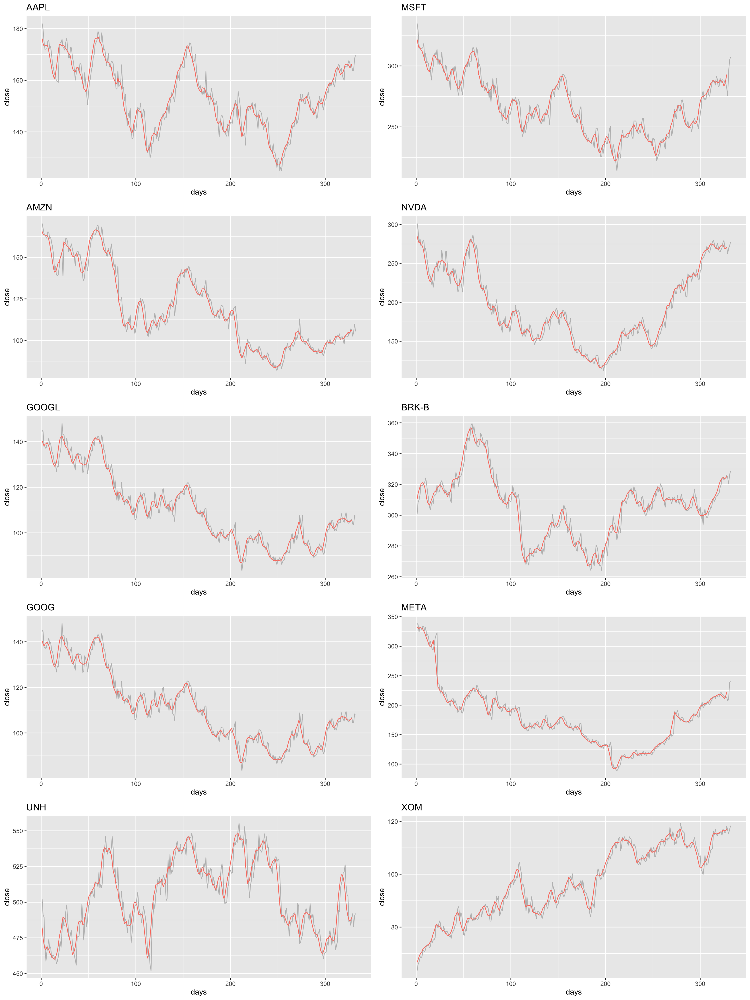
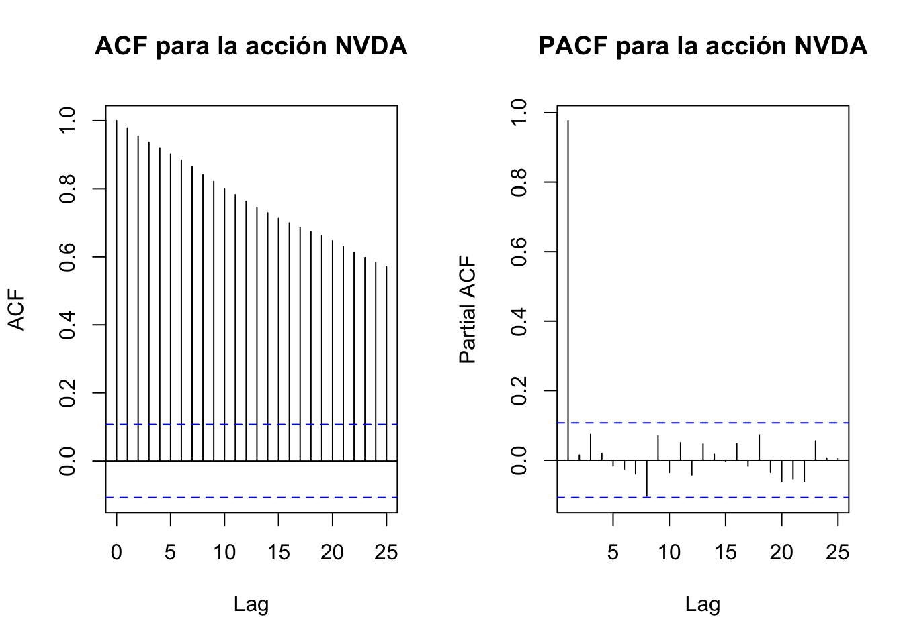
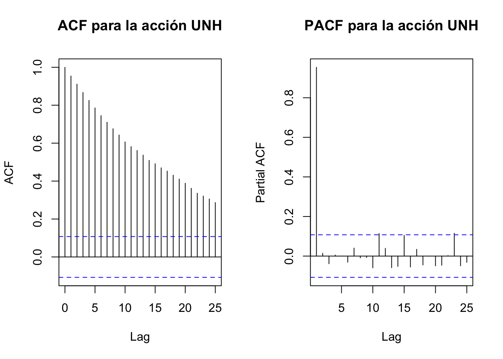

4 Análisis Exploratorio de Datos
Se inicia el análisis exploratorio de los datos recopilando la información de cada una de las empresas Top 10 del índice S&P 500. Se define la variable empresas a la cuál se le asignan las empresas definidas en el numeral 2.1., como también como los rangos de las fechas donde se realizará la consulta de los datos:
empresas = c("AAPL", "MSFT", "AMZN", "NVDA", "GOOGL","BRK-B","GOOG", "META","UNH","XOM")
precios <- tidyquant::tq_get(empresas, from = "2022-01-01", to = "2023-04-30", get = "stock.prices")Como se puede observar en la siguiente tabla, para cada empresa se cuenta con los atributos de propios para cada acción, que indica su símbolo y atributos relacionados con los precios: symbol, open, high, low, close, volume y adjusted.
## # A tibble: 6 × 8
## symbol date open high low close volume adjusted
## <chr> <date> <dbl> <dbl> <dbl> <dbl> <dbl> <dbl>
## 1 AAPL 2022-01-03 178. 183. 178. 182. 104487900 180.
## 2 AAPL 2022-01-04 183. 183. 179. 180. 99310400 178.
## 3 AAPL 2022-01-05 180. 180. 175. 175. 94537600 173.
## 4 AAPL 2022-01-06 173. 175. 172. 172 96904000 171.
## 5 AAPL 2022-01-07 173. 174. 171. 172. 86709100 171.
## 6 AAPL 2022-01-10 169. 172. 168. 172. 106765600 171.A partir de esta información se grafican los valores de cada una de las acciones con respecto al tiempo, obteniendo la siguiente figura:
ggplot2::ggplot(data = precios) +
ggplot2::geom_line(aes(x = date, y = close, color = symbol)) +
ggplot2::labs(title = 'Precio cierre por accion desde 2022-01-01 a 2023-04-30',
y = 'Close Price',
x = 'Date')De la figura anterior se pueden identificar preliminarmente algunas tendencias, como de que la acción de Unitedhealth Group Inc UNH mantiene un precio relativamente constante durante el transcurso del 2022.
4.1 Comportamiento Inicial Series
Con la finalidad de ahondando en la exploración inicial de los datos de las empresas definidas, se intentará identificar ciertas tendicias en los datos, para ello, se debe realizar un filtro o suavizado con el objeto de reducir el ruido y oscilaciones con los que los datos pudieran contar. Es aquí donde se involucran los términos de promedio móvil y rezagos.
4.1.1 Promedio Móvil y Rezagos
El principio de funcionamiento de este método es tomar los últimos k valores de una serie para calcular el promedio y asignarlo al valor del siguiente periodo; la ventana de tiempo utilizada para realizar este cálculo se va desplazando a medida que nuevas observaciones vayan surgiendo [7]. A continuación se presenta la función de promedios móviles de orden simple:
\[\begin{align*} F_{t+1} = \frac{Y_t + Y_{t-1} + ... + Y_{t-k+1}}{k} \\ \end{align*}\]
Luego de esta definición, se procede a calcular para cada una de las series de tiempo de las empresas definidas el promedio móvil. Se define un valor de k=5, así:
stock_plots = list()
for (symbol in unique(precios$symbol)){
stock_data = stats::ts(precios[precios$symbol == symbol, 'close'])
ma = zoo::rollmean(stock_data, k = 5, align = "right")
stock_data = data.frame(stock_data)
ma = data.frame(ma)
stock_plots[[symbol]] = ggplot2::ggplot() +
ggplot2::geom_line(data = stock_data, aes(x = index(stock_data), y = close), color = 'gray') +
ggplot2::geom_line(data = ma, aes(x = index(ma), y = close), color = 'salmon') +
ggplot2::labs(title = symbol, x = 'days')
}
ggpubr::ggarrange(plotlist = stock_plots, ncol = 2, nrow = 5) 
Conforme al gráfico anterior podemos identificar que la gráfica del promedio móvil se ajusta en gran proporción a la serie de tiempo; en casos como para la acción GOOGL se podría de cierta forma establecer una tendencia a la baja. En este punto, puede surgir la pregunta sobre si los datos traen embebidos información adicional, ¿hay datos estacionales?, ¿cómo se comporta el error?… esto se puede evaluar a través de la evaluación de la estacionalidad o descomposición de la serie de tiempo.
4.1.2 Estacionalidad (Descomposicion Aditiva)
Asumiendo que la serie de tiempo es de tipo aditiva de acuerdo con [8], se pueden definir ciertos componentes de esta. En principio una serie de tiempo consta de varios componentes, tendencia, estacionalidad y error; definida por la siguiente formula:
\[\begin{align*} Y_t = S_t + T_t + R_t \end{align*}\]
donde,
\(Y_t =\) Serie de tiempo en un periodo t
\(S_t =\) Componente estacionial en un periodo t
\(T_t =\) Componente de tendencia en un periodo t
\(R_t =\) Error en un periodo de t
Se realiza la descomposición de cada una de las series de tiempo definidas anteriormente:
for (symbol in unique(precios$symbol)){
cat(paste("Acción: ", symbol, "\n"))
stock_data = ts(precios[precios$symbol == symbol, "close"], frequency=5)
plot(decompose(stock_data, type = "additive"))
}## Acción: AAPL
## Acción: MSFT
## Acción: AMZN
## Acción: NVDA
## Acción: GOOGL
## Acción: BRK-B## Acción: GOOG## Acción: META## Acción: UNH## Acción: XOM4.2 Estacionaridad
La estacionariedad en una serie de tiempo se refiere a la propiedad de que la media como la varianza de la misma se mantiene constante a lo largo del tiempo. Esto busca reflejar que el comportamiento que se observa a lo largo del tiempo no muestra una tendencia en especifico o un patrón puntual en la media y la varianza de la serie. Además de que la covarianza entre dos observaciones depende realmente de la distancia temporal (para este ejercicio aplicado, frecuencia diaria) y no depende de la ubicación puntual en el tiempo.
4.2.1 Prueba Dickey- Fuller (ADF) Series naturales
La prueba aumentada de Dickey-Fuller es una prueba bastante conocida para identificar si una serie es estacionaria o no. Las hipótesis asociadas a las pruebas se presentan a continuación:
\(H0:\) La serie de tiempo tiene una raíz unitaria. La serie de tiempo no es estacionaria
\(Ha:\) La serie de tiempo no tiene raíces unitarias. La serie de tiempo es estacionaria
La prueba nos indica que si contamos con valor p menor a un nivel de significancia especifico (por ejemplo 0.05), entonces existe evidencia estadística para rechazar la hipótesis nula y suponer que la serie es estacionaria. En el caso en que esto no suceda, es decir que no se rechaza H0, entonces será el indicio de que no contamos con una serie que posea media y varianza constante en el tiempo, lo que nos sugerirá evaluar un posible proceso de transformación y/o diferenciación a los datos temporales.
for (column in unique(precios$symbol)) {
stock_data <- ts(precios[precios$symbol == column, "close"])
result <- adf.test(stock_data)
cat(paste("Acción: ", column, "\n"))
cat(paste("ADF Estadística: ", result$statistic, "\n"))
cat(paste("Valor p: ", result$p.value, "\n"))
for (key in names(result$critical)) {
cat(paste(" ", key, ": ", result$critical[key], "\n"))
}
cat("-----------------------\n")
}## Acción: AAPL
## ADF Estadística: -2.05566854881785
## Valor p: 0.553122778288091
## -----------------------
## Acción: MSFT
## ADF Estadística: -1.26008325178021
## Valor p: 0.888678271671602
## -----------------------
## Acción: AMZN
## ADF Estadística: -2.57789631611209
## Valor p: 0.332861799653268
## -----------------------
## Acción: NVDA
## ADF Estadística: -1.16775576501797
## Valor p: 0.910561973384199
## -----------------------
## Acción: GOOGL
## ADF Estadística: -1.85896174733311
## Valor p: 0.636088172532902
## -----------------------
## Acción: BRK-B
## ADF Estadística: -1.63954392454958
## Valor p: 0.728632436555145
## -----------------------
## Acción: GOOG
## ADF Estadística: -1.88587340131609
## Valor p: 0.62473759407997
## -----------------------
## Acción: META
## ADF Estadística: -1.69491663799333
## Valor p: 0.705277784013442
## -----------------------
## Acción: UNH
## ADF Estadística: -2.58340138363729
## Valor p: 0.330539917063923
## -----------------------
## Acción: XOM
## ADF Estadística: -3.45252088823684
## Valor p: 0.0475229915156887
## -----------------------Si establecemos como valor p de referencia el 0.05, entonces nos sugiere que 9 de las 10 empresas (acciones) evaluadas son no estacionarias, ya que su respecto valor p, supera a 0.05. La única empresa en la cual se encuentra evidencia estadística para decir que es estacionaria es XOM.
Como la conclusión de la prueba nos permite admitir un proceso de diferenciación, podemos pensar si los gráficos de series iniciales sugerían una tendencia así sea leve por ejemplo que hizo que no se consideraran como series estacionarias. Otra forma de evaluar estos comportamientos, es a partir de herramientas grafica como la función de autocorrelación (FAC) y la función de autocorrelación parcial (PFAC) se comportan, se evaluarán a continuación.
4.2.2 ACF y PACF
La función de autocorrelación ACF y la función de autocorrelación parcial PACF son herramientas gráficas de series de tiempo que permiten conocer el comportamiento de una observación versus las anteriores. La ACF, muestra como una observación se comporto versus las observaciones pasadas. En cambio la PACF, por su parte busca como un observación se relaciona a un momento anterior dado, es decir, después de que se elimina la correlación que es explicada por las diferencias intermedias. Normalmente nos da un indicio relacionado a la tendencia de los datos y la estacionalidad. Entendiendo que son varias series se buscara interpretar con la serie de Apple, para entender un poco más este concepto.
precios_df=as.data.frame(precios)
for (i in unique(precios$symbol)) {
stock_i <- subset(precios, symbol == i)
stock_ts <- ts(stock_i$close)
stock_acf <- acf(stock_ts,plot = FALSE)
stock_pacf <- pacf(stock_ts,plot = FALSE)
par(mfrow=c(1,2))
plot(stock_acf, main=paste("ACF para la acción", i))
plot(stock_pacf, main=paste("PACF para la acción", i))
}
Por ejemplo se puede observar, que prácticamente todos los rezagos son significativos pues superan las bandas de confianza. La FAC muestra valores significativos en varios desfaces, esto indica que la serie de tiempo es dependiente en el tiempo. Si observamos la PACF en la empresa APPL, el primer rezago es significativo, esto indica una correlación directa entre la observación actual y la inmediatamente anterior. Esto también nos sugiere el termino autoregresivo en caso de evaluarse ajustar un modelo ARMA.
4.2.3 Diferenciación
La estacionariedad en una serie de tiempo se refiere a la propiedad de que la media como la varianza de la misma se mantiene constante a lo largo del tiempo. Esto busca reflejar que el comportamiento que se observa a lo largo del tiempo no muestra una tendencia en especifico o un patrón puntual en la media y la varianza de la serie. Además de que la covarianza entre dos observaciones depende realmente de la distancia temporal (para este ejercicio aplicado, frecuencia diaria) y no depende de la ubicación puntual en el tiempo.
precios <- precios %>%
group_by(symbol) %>%
mutate(diferenciado1 = c(NA, diff(close, differences = 1)[-length(close)]))
head(precios)## # A tibble: 6 × 9
## # Groups: symbol [1]
## symbol date open high low close volume adjusted diferenciado1
## <chr> <date> <dbl> <dbl> <dbl> <dbl> <dbl> <dbl> <dbl>
## 1 AAPL 2022-01-03 178. 183. 178. 182. 104487900 180. NA
## 2 AAPL 2022-01-04 183. 183. 179. 180. 99310400 178. -2.31
## 3 AAPL 2022-01-05 180. 180. 175. 175. 94537600 173. -4.78
## 4 AAPL 2022-01-06 173. 175. 172. 172 96904000 171. -2.92
## 5 AAPL 2022-01-07 173. 174. 171. 172. 86709100 171. 0.170
## 6 AAPL 2022-01-10 169. 172. 168. 172. 106765600 171. 0.02004.2.4 Prueba Dickey- Fuller (ADF) Series diferenciadas
Excluimos del vector de empresas(acciones) a XOM, ya que fue la única que logramos observar que es estacionaria sin necesidad de realizar el proceso de diferenciación.
symbols_no_estacionarios <- setdiff(unique(precios$symbol), "XOM")
for (column in symbols_no_estacionarios) {
stock_data <- precios[precios$symbol == column, ]
stock_data_omit_na <- na.omit(stock_data$diferenciado1)
result <- adf.test(stock_data_omit_na)
cat(paste("Acción: ", column, "\n"))
cat(paste("ADF Estadística: ", result$statistic, "\n"))
cat(paste("Valor p: ", result$p.value, "\n"))
for (key in names(result$critical)) {
cat(paste(" ", key, ": ", result$critical[key], "\n"))
}
cat("-----------------------\n")
}## Acción: AAPL
## ADF Estadística: -6.66340145927991
## Valor p: 0.01
## -----------------------
## Acción: MSFT
## ADF Estadística: -7.21412735449904
## Valor p: 0.01
## -----------------------
## Acción: AMZN
## ADF Estadística: -6.74472720274422
## Valor p: 0.01
## -----------------------
## Acción: NVDA
## ADF Estadística: -6.01198490395914
## Valor p: 0.01
## -----------------------
## Acción: GOOGL
## ADF Estadística: -8.12030932167298
## Valor p: 0.01
## -----------------------
## Acción: BRK-B
## ADF Estadística: -6.44380476381158
## Valor p: 0.01
## -----------------------
## Acción: GOOG
## ADF Estadística: -8.095317497104
## Valor p: 0.01
## -----------------------
## Acción: META
## ADF Estadística: -7.55972583872282
## Valor p: 0.01
## -----------------------
## Acción: UNH
## ADF Estadística: -7.36858131320366
## Valor p: 0.01
## -----------------------Una vez se lleva a cabo la diferenciación de primer orden sobre las 9 empresas (restantes) y se realiza la prueba dickey-fuller, encontramos que el valor p en todos los caso es menor a 0.05, lo que permite rechazar H0 y considerar que existe evidencia estadística para pensar que las series son estacionarias.